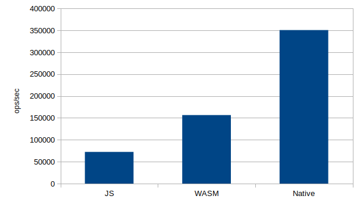
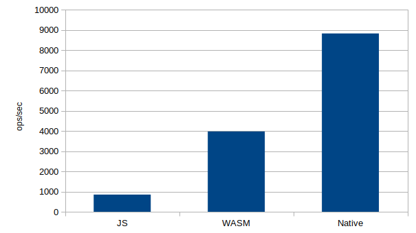
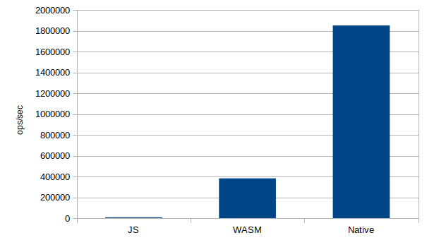
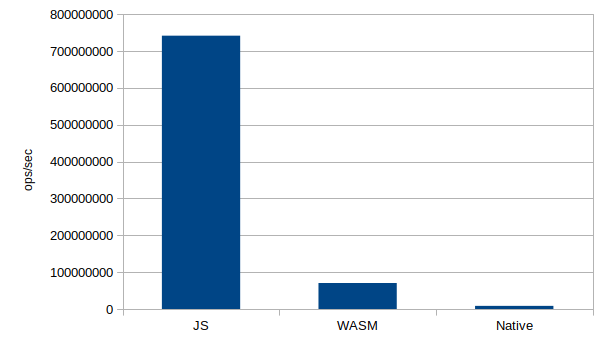

Server-side WebAssembly
Benchmark
Compute stuff from a Node App
- JS
- Native
- WebAssembly
Javascript
function sum(a, b) {
return a + b;
}
module.exports = {
sum,
};
AssemblyScript/WASM
export function sum(a: i32, b: i32): i32 {
return a + b;
}
Rust/WASM
use wasm_bindgen::prelude::*;
#[wasm_bindgen]
pub fn sum(a: usize, b: usize) -> usize {
a + b
}
Rust/Native
#[macro_use]
extern crate neon;
use neon::prelude::*;
fn sum(mut cx: FunctionContext) -> JsResult<JsNumber> {
let a = cx.argument::<JsNumber>(0)?.value();
let b = cx.argument::<JsNumber>(1)?.value();
Ok(cx.number(a + b))
}
register_module!(mut cx, {
cx.export_function("sum", sum)?;
});
Benchmark #1: Fibonacci
Benchmark #2: Parse TOML file
Benchmark #3: Compute SHA1
Benchmark #4: Sum
Conclusion
Standalone WebAssembly runtimes
- Wasmer
- Wasmtime
- Lucet